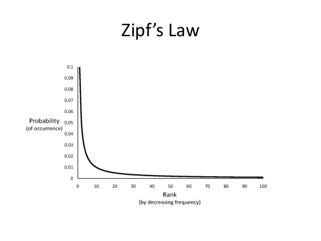
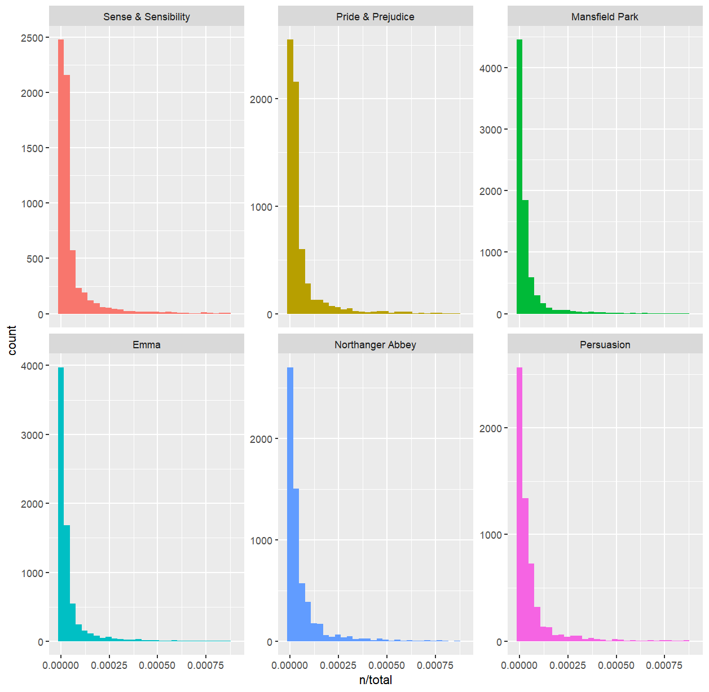

Zipf’s Law는..
Zipf의 법칙(Zipf’s Law)은 언어학과 정보 이론에서 관찰되는 경험적인 법칙으로, 주어진 말뭉치(corpus)에서 단어의 사용 빈도와 순위 사이에 특정한 관계가 있다는 것을 기술합니다. 이 법칙은 미국의 언어학자 조지 캥스리 지프(George Kingsley Zipf)에 의해 1930년대에 발견되었습니다.
Zipf의 법칙에 따르면, 말뭉치에서 각 단어의 사용 빈도는 그 단어의 순위에 반비례합니다. 다시 말해, 가장 빈번하게 사용되는 단어의 빈도는 두 번째로 빈번하게 사용되는 단어의 빈도보다 대략 두 배 많으며, 세 번째로 빈번하게 사용되는 단어의 빈도보다 대략 세 배 많은 식입니다.
브라운 대학교 현대 미국 영어 표준 말뭉치의 경우, 가장 사용 빈도가 높은 단어는 영어 정관사 “the”이며 전체 문서에서 7%의 빈도(약 백만 개 남짓의 전체 사용 단어 중 69,971회)를 차지한다. 두 번째로 사용 빈도가 높은 단어는 “of”로 약 3.5% 남짓(36,411회)한 빈도를 차지하며, 세 번째로 사용 빈도가 높은 단어는 “and”(28,852회)로, 지프의 법칙에 정확히 들어 맞는다. 약 135개 항목의 어휘만으로 브라운 대학 말뭉치의 절반을 나타낼 수 있다.
Zipf의 법칙은 여러 언어와 다양한 텍스트에서 일관되게 관찰되는 현상으로, 인간 언어와 정보 처리의 기본 원리를 이해하는 데 도움이 됩니다. 이 법칙의 정확한 원인은 아직 명확하게 밝혀지지 않았지만, 자연 언어가 최적화된 정보 전달 방식을 따르는 결과라는 설명이 제안되고 있습니다.
Zipf’s Law 예제 (제인 오스틴 소설)

이성과 감성 / 오만과 편견 / 맨스필드 파크 / 엠마 / 노생거 사원 / 설득 모두 Zipf’s law를 만족함을 확인할 수 있다.
# Load Library
library(tidyverse)
library(tidytext)
library(janeaustenr)
word_count <- austen_books() |>
unnest_tokens(word, text) |>
count(book, word, sort = TRUE)
total_word <- word_count |> group_by(book) |> summarise(total = sum(n))
word_count <- word_count |> left_join(total_word, by = "book")
head(word_count)
ggplot(word_count, aes(n/total, fill = book)) +
geom_histogram(show.legend = FALSE) +
xlim(NA, 0.0009) +
facet_wrap(~book, ncol = 2, scales = "free_y")# A tibble: 6 × 4
book word n total
<fct> <chr> <int> <int>
1 Mansfield Park the 6206 160460
2 Mansfield Park to 5475 160460
3 Mansfield Park and 5438 160460
4 Emma to 5239 160996
5 Emma the 5201 160996
6 Emma and 4896 160996